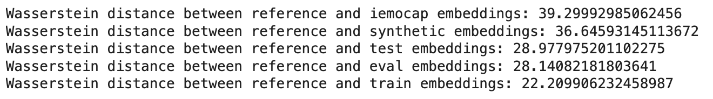

| Coping with Small Audio Data: A Theoretical and Practical Approach | |||
| Ethan Siegel | Drew Ross | Jerry Lu | |
| Final project for 6.7960, MIT | |||
| Coping with Small Audio Data: A Theoretical and Practical Approach | |||
| Ethan Siegel | Drew Ross | Jerry Lu | |
| Final project for 6.7960, MIT | |||
Audio data is a crucial component of many speech-oriented applications and modeling tasks, but it is often difficult to obtain and process audio data that is robust, accurate, and representative for a downstream task. Many existing methods for audio processing, especially modern deep learning-based approaches, are designed for large datasets, but in practice, audio data is often limited in quantity and quality, especially since audio data is an inherently noisy and complex signal. This can lead to suboptimal performance and reduced accuracy in downstream tasks.
Our goal is to explore and evaluate state-of-the-art approaches for training deep learning models for downstream audio tasks when the initial audio data is limited. To do this, we will focus on training deep learning models for a downstream speech emotion classification task. We will pay attention to the methods used to generate the training data and how it affects the performance of the model, and evaluate implications from a practical and theoretical perspective.
Specifically, we will focus on the techniques of pre-training on a larger dataset and synthetic data generation as two practical approaches to handling the small audio data problem. Then, we will leverage the Wasserstein Distance (Earth Mover's Distance) between two datasets as a theoretical way to evaluate the expected performance of these approaches.
In doing so, we aim to develop an understanding for handling small audio data for deep learning in a disciplined way, and advance methods to do larger scale machine learning on audio based modalities.
Let's break down our two main approaches to leveraging small audio data for deep learning tasks that require large amounts of data, when we only have a small dataset:
This method involves finding a large dataset that is similar to our target task that our small dataset was collected from, pre-training for many epochs on this large dataset, and then fine-tuning on our small dataset for a few epochs.
A successful implementation of this method would result in a robust general pretrained model that can be fine-tuned on our small dataset to successfully perform the downstream speech emotion classification task. This would require ample transfer learning from the large dataset, requiring that the large dataset is similar enough to our small dataset.
The advantage of this method is that it is much more simple and straightforward to find existing data than generate or augment new data. However, the primary disadvantage is that the large dataset may not be exactly similar to our small dataset, and so the pretrained model may not be able to generalize as well to the downstream task.
This method involves generating synthetic data from our small dataset, pre-training for many epochs on the synthetic data, and then fine-tuning for a few epochs on our small dataset.
A successful implementation of this method would involve generating a synthetic dataset that is similar to our small dataset, pre-training a task-specific model on the synthetic data, and then fine-tuning on our small dataset for precision.
The advantage of this method is that if we can generate a synthetic dataset that is verysimilar to our small dataset, this would allow for much more accurate and generalizable training. However, the primary disadvantage is the difficulty in generating high quality synthetic data in the audio domain.
To quantify difference between our datasets, we had to consider that the datasets were not well-aligned, meaning they had differences in scale, structure, or temporal alignment that required preprocessing for accurate comparison. At a higher level, the "Friends" dataset comprises conversations from the television show, featuring scripted interactions, whereas the other datasets consist of spontaneous speech, characterized by informal language, and varied contextual backgrounds. These inherent differences in language style, structure, and context lead to distinct distributional properties, making direct comparisons and alignment challenging.
Many statistical difference measures exist to quantify difference between two probability distributions (we can think of our datasets as samples drawn from their respective probability distributions). Among these, Jensen-Shannon (JS) Divergence, Bhattacharyya Distance, and Wasserstein Distance are prominent. JS and Bhattacharyya require defined CDFs or PDFs, which aren't easily calculated for the high-dimensional fixed-embeddings generated from our datasets, making them less effective. In contrast, Wasserstein Distance excels in handling high-dimensional, unaligned data. Therefore, we chose Wasserstein distance as our similarity metric.
Wasserstein distance provides a theoretically rigorous way to measure the similarity between probability distributions. In our context, we can leverage this metric to quantify how "close" two audio datasets are in their embedding space. By computing the minimum "cost" of transforming the distribution of embeddings from one dataset into another, the Wasserstein distance gives us a meaningful measure of dataset similarity that accounts for both the location and shape of the distributions. This is particularly valuable when comparing our small target dataset with either a large pre-training dataset (Method 1) or synthetic data (Method 2), as it allows us to mathematically validate how well our chosen/generated data aligns with the target distribution. A smaller Wasserstein distance would suggest better potential for transfer learning or synthetic data quality, while larger distances may indicate fundamental distributional differences that could limit performance.
In the context of our project, we first processed all audio samples through Facebook's wav2vec2 model to obtain fixed-dimensional embeddings that capture the acoustic features of the speech. Using these embeddings as points in the high-dimensional space, we calculated the Wasserstein distance. This metric helped us understand which datasets were most similar to our small training set in terms of their underlying audio characteristics and validate our approach of using synthetic data and pre-training.
To calculate the Wasserstein distance between our datasets, we first need to establish a cost matrix that defines the "cost" of moving data points from one distribution to another. This matrix is essential for quantifying the effort required to align the two datasets. Upon analysis, we found that the embedding values ranged between -11 and 11: a relatively small distance that does not require normalization. Therefore, we selected Euclidean distance as our cost metric for Wasserstein distance calculation due to its simplicity.
We acknowledge that in high-dimensional datasets, dimensionality-reduction techniques such as Principle Component Analysis (PCA) are important for computational efficiency (both in model training and computing the Wasserstein distance) and noise reduction. However, prior research using our chosen embedding dimension size has demonstrated sufficient results without dimensionality reduction.
This project will involve testing an implementation of these two methods, evaluating their performance, then analyzing the results from the mentioned theoretical perspective.
Here we will discuss the implementation of the two methods described in the previous section.
First, let's discuss the data we will be using. Our downstream task will be speech emotion classification on the MELD dataset, which contains around 15,000 utterances from the TV show Friends paired with their corresponding emotion labels. Thus, our downstream task is to predict the emotion of new utterances from Friends. For our purposes, we chose to only focus on datapoints labelled with the emotion labeles "neutral", "joy", "sadness", "anger", and "surprise".
Example MELD Audio Clip
After filtering the dataset to only include these labels and splitting into train/test/validation sets, we have roughly 9500 labelled utterances for training, 4500 for testing, and 1000 for validation. Additionally, to simulate having a small training dataset, we sampled 1 of every 4 training datapoints to create a small training dataset of roughly 2350 samples.
The large train dataset will only be used as a baseline reference to evaluate the performance of our other experiments. TODO put table with all datasets and their sizes
TODO: paragraph on model for downstream task.
For our large pre-training dataset that is similar to our Friends emotion classification task, we chose the IEMOCAP dataset, which contains around 7,500 utterances paired with its corresponding emotion label. The dataset is comprised of actor dialogues speaking English, similar to the Friends dataset.
Example IEMOCAP Audio Clip
TODO: paragraph on method for pretraining on iemocap. how many epochs, hyperparameters, etc.
TODO: paragraph on fine-tuning on small dataset. how many epochs, hyperparameters, etc.To generate synthetic data from our small dataset, we leveraged Microsoft's E2TTS model, which is a text-to-speech model that can be used to generate speech from text, replicating the emotion of an inputted utterance. First, we used a LLM to generate a large amount of common English utterances in text. Next, for each utterance in the small dataset, we inputted the utterance and 5randomly selected LLM generated text utterances into the E2TTS model, and generated 5 new audio samples that are saying new text in the same emotion as the inputted utterance. This process allowed us to generate a synthetic dataset of around 12,000 samples whose distribution of emotions matched that of our small dataset. Below are some examples of synthetic utterances generated by E2TTS and the emotion of the utterance.
Joy
Neutral
Sadness
TODO: paragraph on method for pretraining on synthetic data. how many epochs, hyperparameters, etc.
TODO: paragraph on fine-tuning on small dataset. how many epochs, hyperparameters, etc.
| Dataset | # Training Data Points | Test Accuracy |
|---|---|---|
| full_MELD | 9449 | 0.601 |
| small_MELD | 2353 | 0.510 |
| IEMOCAP + small_MELD | 6950 | 0.515 |
| Synthetic + small_MELD | 14118 | 0.535 |
The Wasserstein distances between our small training dataset and each of the other datasets revealed an intuitive pattern that validates our approach. As shown in Figure 4, the large training dataset from MELD had the smallest Wasserstein distance to our small training set, which is expected since they come from the same source distribution. The test and evaluation sets (also from MELD) showed the next smallest distances, confirming the consistency of the MELD dataset's audio characteristics across splits. Interestingly, our synthetic dataset demonstrated a smaller Wasserstein distance to the small training set compared to the IEMOCAP dataset, which was used in our first pre-training approach. This quantitatively supports our hypothesis that synthetic data generation can produce samples that better match the target distribution compared to using a different real-world dataset. The larger distance to IEMOCAP suggests that while it contains emotional speech data, its underlying audio characteristics differ more substantially from our target MELD distribution, potentially limiting the effectiveness of transfer learning from this source.
Wasserstein distances between the small training dataset and other datasets, showing relative similarities in their underlying audio distributions.
TODO: paragraph on analysis of the results.
TODO: paragraph on implications and limitations.
Incorporating Wasserstein distance into model fine-tuning: TODO Implementing a Wasserstein Generative Adversarial Network (WGAN): TODO